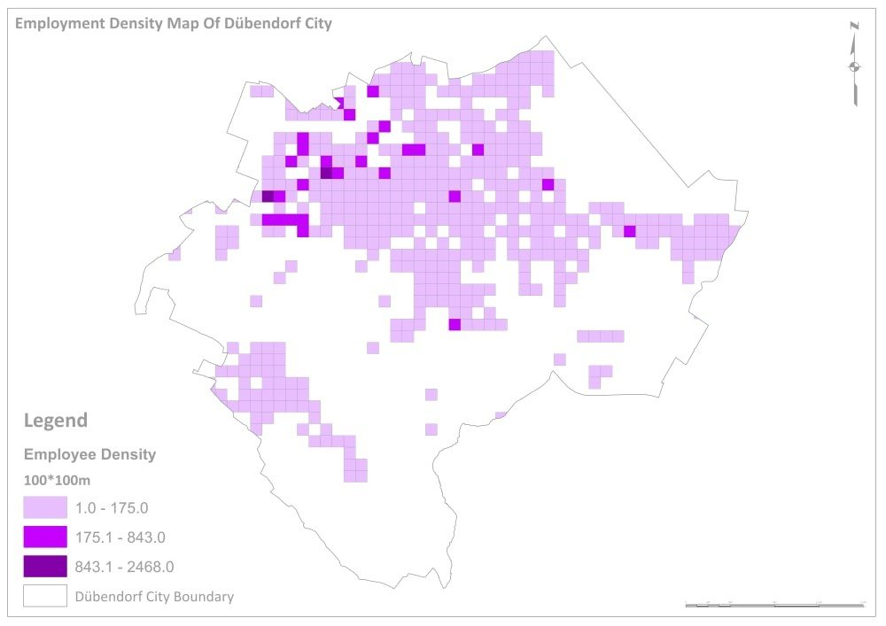

Urban GIS & Site SuitabilityFig. 1 Employees per 100 m grid cell in Dübendorf
Employment Density on a 100 m Grid: Dübendorf
Employment density map of Dübendorf, showing the number of employees in each 100 m × 100 m grid cell across the city.
- Location
- Dübendorf, Switzerland
- Year
- 2024
- Client
- Upwork client, Switzerland
- Tools
- ArcGIS, QGIS, Swiss 100 m grid


Challenge
Show where jobs are concentrated in Dübendorf for planners and businesses.
Approach
- Clipped the employment grid to the city
- Classified employees per cell into three classes
- Designed the thematic layout
Results
- Most cells hold 1–175 employees; a few hotspots reach 843–2,468 employees per cell
- Employment clusters in the north and centre of the city, with a secondary cluster in the south-west